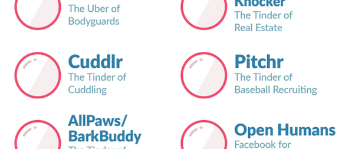

Episode Five
Episode 5: Why the design of elevators makes for a horrifically awkward social experience. Learn how to nail your start-up pitch with the Hollywood Elevator Pitch. And meet Black Girls Code, an organization working to fix Silicon Valley’s diversity problems. Rise up for Episode 5: Lift Pack!
-
The Term ‘Elevator Pitch’ Was Only Coined in the 90s?
The Elevator Pitch is now so ubiquitous that it feels like it must have originated in the era of Mad Men. So it’s hard to believe - but true - that idea was Ilene Rosenzweig’s tactic to advance her boyfriend’s writing career at Vanity Fair in the 90s.
 The New Elevator Pitch Infographic -
How to Pitch Your Startup, Hollywood Style
Hollywood movies have long been pitched using the “it’s X meets Y” elevator pitch formula. It’s Batman meets On Golden Pond. It’s Elf meets Halloween. It’s Fried Green Tomatoes meets The Shining.
Brace yourself: the Hollywood Style Elevator Pitch has invaded Silicon Valley as THE way to seduce Venture Capitalists. As evidenced here, the results are not always pretty.
-
The Actual Etiquette of Elevator Awkwardness
Ding! The doors slide open. You are filled with dread, knowing that you are about to enter one of humanity’s most awkward social situations: riding the elevator with strangers. Welcome to the strange world of elevator design theory.
-
It’s Not Me. It’s You, Voicemail. It’s You.
The Dear John message we should ALL send to our least favorite relationship partner: voicemail.
-
The Complicated Story of the Very First Smartwatch
The number of features a smartwatch has is practically infinite, but during the rise of mechanical watchmaking, it took an army of the world’s best jewellers, craftsmen, mathematicians, and astronomers decades (and the equivalent of millions of dollars) to create a the most complicated watch the world had ever seen.
The Very First Smartwatch Infographic -
Black Girls Code Inspires the Next Generation of Tech
Much has been written about Silicon Valley’s diversity problems. Simply put, there are too many massive companies overflowing with white dudes. Enter Black Girls Code, an organization that is pushing for necessary changes in the world of tech.